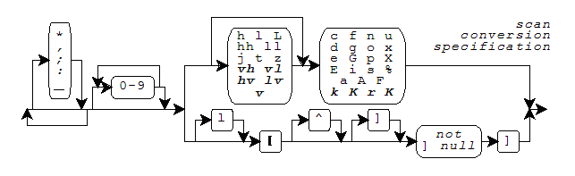

Scan Formats · Scan Functions · Scan Conversion Specifiers
Several library functions help you convert data values from text sequences that are generally readable
by people to encoded internal representations. You provide a format
string as the value of the format argument to each of these functions, hence the term
formatted input. The functions (declared in <stdio.h>) convert sequences of type char to
internal representations, and help you scan such sequences that you read: fscanf, scanf, and sscanf. For these function, a format string is a multibyte string that begins and ends in the initial shift state.
A format string has the same general syntax for the scan functions as for the print functions: zero or more conversion specifications, interspersed with literal text and white space. For the scan functions, however, a conversion specification is one of the scan conversion specifications described below.
A scan function scans the format string once from beginning to end to determine what conversions to
perform. Every scan function accepts a varying
number of arguments, either directly or under control of an argument of type va_list. Some scan conversion specifications in the format string
use the next argument in the list. A scan function uses each successive argument no more than once.
Trailing arguments can be left unused.
In the description that follows, the integer conversions and floating-point conversions are the same as for the print functions.
For the scan functions, literal text in a format string must match the next characters to scan in the
input text. White space in a format string must match the longest
possible sequence of the next zero or more white-space characters in the input. Except for the scan conversion specifier %n (which
consumes no input), each scan conversion specification
determines a pattern that one or more of the next characters in the input must match. And except for the
scan conversion specifiers c,
n, and [, every match begins by skipping any
white space characters in the input.
A scan function returns when:
A scan function returns EOF if an input failure occurs before
any conversion. Otherwise it returns the number of converted values stored. If one or more characters form
a valid prefix but the conversion fails, the valid prefix is consumed before the scan function returns.
Thus:
scanf("%i", &i) consumes 0X from field 0XZ
scanf("%f", &f) consumes 3.2E from field 3.2EZ
A scan conversion specification typically converts the matched input characters to a corresponding encoded value. The next argument value must be the address of an object. The conversion converts the encoded representation (as necessary) and stores its value in the object. A scan conversion specification has the format shown in the diagram.

Boldface Italic indicates a feature added after C99. Support for fixed-point conversions is added with the C Technical Report TR18037. These closely match the extensions for the Freescale Signal Processing Engine Auxiliary Processing Unit. This implementation also includes, as a conforming extension, conversions for the vectors supported by the Freescale AltiVec architecture.
Following the percent character (%) in the format string, you can write an asterisk
(*) to indicate that the conversion should not store the converted value in an
object.
For AltiVec vector conversions, you can either precede or follow an asterisk with an optional separator, the characters comma, semicolon, equal sign, or underscore. The conversion occurs for each of the elements of the vector, and matches a separator sequence between each pair of elements. If you specify a separator, the separator sequence is optional white space ending with the separator. If you specify no separator, the default separator sequence is:
c conversion specifier, nothing.Following any * and/or separator, you can write a nonzero field width that specifies the maximum number of input characters to match for
the conversion (not counting any white space that the pattern can
first skip).
Following any field width, you must write a one-character scan
conversion specifier, either a one-character code or a scan set, possibly
preceded by a one- or two-character qualifier. Each combination determines the type required of the next
argument (if any) and how the scan functions interpret the text sequence and converts it to an encoded
value. The integer and floating-point conversions also determine what base to
assume for the text representation. (The base is the base argument to the functions strtol and strtoul.)
The following table lists all defined combinations and their properties.
Conversion Argument Conversion Specifier Type Function Base %c char x[] %d int *x strtol 10 %hd short *x strtol 10 %ld long *x strtol 10 %e float *x strtod 10 %le double *x strtod 10 %Le long double *x strtod 10 %E float *x strtod 10 %lE double *x strtod 10 %LE long double *x strtod 10 %f float *x strtod 10 %lf double *x strtod 10 %Lf long double *x strtod 10 %g float *x strtod 10 %lg double *x strtod 10 %Lg long double *x strtod 10 %G float *x strtod 10 %lG double *x strtod 10 %LG long double *x strtod 10 %i int *x strtol 0 %hi short *x strtol 0 %li long *x strtol 0 %n int *x %hn short *x %ln long *x %o unsigned int *x strtoul 8 %ho unsigned short *x strtoul 8 %lo unsigned long *x strtoul 8 %p void **x %s char x[] %u unsigned int *x strtoul 10 %hu unsigned short *x strtoul 10 %lu unsigned long *x strtoul 10 %x unsigned int *x strtoul 16 %hx unsigned short *x strtoul 16 %lx unsigned long *x strtoul 16 %X unsigned int *x strtoul 16 %hX unsigned short *x strtoul 16 %lX unsigned long *x strtoul 16 %[...] char x[] %% none
The scan conversion specifier (or scan set) determines any behavior not
summarized in this table. In the following descriptions, examples follow each of the scan conversion
specifiers. In each example, the function sscanf matches the
bold characters.
You write %c to store the matched input characters in an array
object. If you specify no field width w, then w has the value one. The match does not skip
leading white space. Any sequence of w characters matches
the conversion pattern.
sscanf("129E-2", "%c", &c) stores '1'
sscanf("129E-2", "%2c", &c[0]) stores '1', '2'
You write %d, %i, %o, %u, %x, or %X to convert the matched input
characters as a signed integer and store the result in an integer object.
sscanf("129E-2", "%o%d%x", &i, &j, &k) stores 10, 9, 14
You write %e, %E, %f, %g, or %G to convert the matched input characters as a signed fraction, with an optional
exponent, and store the result in a floating-point object.
sscanf("129E-2", "%e", &f) stores 1.29
You write %n to store the number of characters matched (up to this
point in the format) in an integer object. The match does not skip leading white space and does not match any input characters.
sscanf("129E-2", "12%n", &i) stores 2
You write %p to convert the matched input characters as an external
representation of a pointer to void and store the result in an object of type pointer to
void. The input characters must match the form generated by the %p print
conversion specification.
sscanf("129E-2", "%p", &p) stores, e.g. 0x129E
You write %s to store the matched input characters in an array
object, followed by a terminating null character. If you do not specify a field width w, then
w has a large value. Any sequence of up to w non white-space characters matches the
conversion pattern.
sscanf("129E-2", "%s", &s[0]) stores "129E-2"
You write %[ to store the matched input characters in an array
object, followed by a terminating null character. If you do not specify a field width w, then
w has a large value. The match does not skip leading white
space. A sequence of up to w characters matches the conversion pattern in the scan set that follows. To complete the scan set, you follow the left bracket
([) in the conversion specification with a sequence of zero or more match characters,
terminated by a right bracket (]).
If you do not write a caret (^) immediately after the [, then each
input character must match one of the match characters. Otherwise, each input character must not
match any of the match characters, which begin with the character following the ^. If
you write a ] immediately after the [ or [^, then the
] is the first match character, not the terminating ]. If you write a minus
(-) as other than the first or last match character, an implementation can give it
special meaning. It usually indicates a range of characters, in conjunction with the characters immediately
preceding or following, as in 0-9 for all the digits.) You cannot specify a null match
character.
sscanf("129E-2", "%[54321]", &s[0]) stores "12"
You write %% to match the percent character (%). The
function does not store a value.
sscanf("% 0XA", "%% %i", &i) stores 10
See also the Table of Contents and the Index.
Copyright © 1992-2010 by P.J. Plauger and Jim Brodie. All rights reserved.